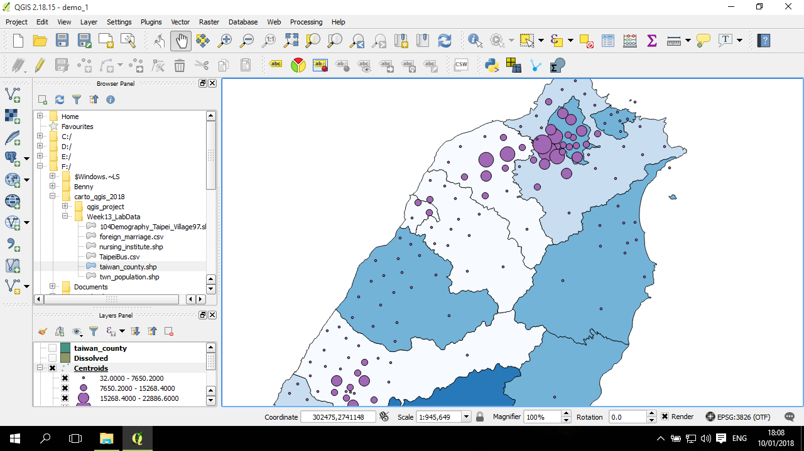

泡泡圖 (bubble)
泡泡圖是一種點資料的呈現方式，包括等比例符號圖(proportional symbols map)與漸層符號圖(graduated symbols map)，前者用與指定數值(欄位)等比例大小的符號繪製於地圖，後者對數值進行分層 (比方說分 5層) ，然後在依照分層結果來繪製符號大小 (比方說5種大小) 。不管是哪一種符號大小的設計方式，泡泡圖都是透過符號的大小(泡泡的大小)來反映數值的大小。
QGIS 中提供的方法主要是漸層符號地圖的繪製方式，以下進行說明。
繪製泡泡圖
以下是用鄉鎮圖層(twn_population.shp)所產生的鄉鎮中心點(centroid)進行繪製。背景疊的是縣市老化指數。
打開點圖層的properties，並進入第二個 (Style) 分頁：
預設是使用 Single symbol，點一下，然後在下拉選單中選 Graduated symbol：
下方的整個區塊隨之改變後，在Column欄位中選擇要使用作為泡泡大小數值的欄位(例如圖中是想用25-29歲人口數來畫泡泡圖大小)：
在 Method 欄位中，選Size：

預設是使用 Color，即用漸層顏色來區分點的數值大小，類似分層設色圖。
跟分層設額圖類似，選好分層方式後，點下 Classify，分層結果就好了：
泡泡圖就畫好了：

調整泡泡圖形狀與顏色
透過點圖層的 properties ，點擊 Symbol 旁邊 Change... 按鈕：
進入後，如果移動到 Simple marker，底下的 Symbol layer type 的下拉選單可以選擇不同的符號類型，包括橢圓形：
範例中還是使用圓圈作為示範。
可以調整泡泡內部的填色 (Fill)，以及邊緣的顏色(Outline)；大小、邊緣的設計也可以進行調整：
再回到剛剛的視窗，可以進一步將透明度進行調整，預設是不透明，範例是調整成25%透明：
最後，透過地圖排版，可以進一步比較地圖，以下範例是比較 25-29歲人口泡泡圖與60-64歲人口泡泡圖的北台灣分佈：